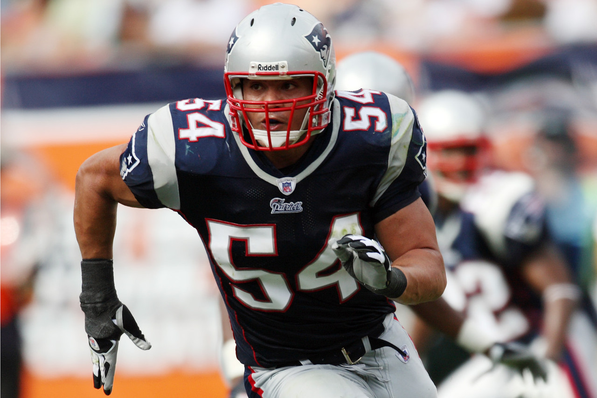

Hall Of Fame
Contributors
Billy Sullivan
Billy Sullivan In a fitting tribute on the occasion of the New England Patriots 50th anniversary celebration in 2009, Patriots Chairman and CEO Robert Kraft inducted the franchise’s original owner, Billy Sullivan, into the Patriots Hall of Fame as a contributor. Sullivan is the first contributor to be inducted into the Hall of Fame. Sullivan and a consortium of businessmen mustered up enough cash in 1959 to secure the eighth and final AFL franchise in a new league that would attempt to do what many had tried and failed to do before them -- battle the established NFL. Dubbed “The Foolish Club”, the original eight AFL owners persevered and succeeded. The two league’s merged in 1970. Sullivan owned the club until 1988 when he sold to razor magnate Victor Kiam. But while professional football in New England had failed to take root in previous attempts, Sullivan’s effort laid the groundwork for today’s Patriots. Under Sullivan, the 1963 Patriots played for the AFL Championship. He also oversaw NFL playoff teams in 1976, 1978, 1982, 1985 and 1986 with an AFC Championship and Super Bowl berth in 1985.

Gil Santos

Gil Santos was the voice of the Patriots for 36 seasons - touching five decades. The venerable Santos called 743 career Patriot games and earned the moniker “Voice of the New England Patriots.” Patriots owner and CEO Robert Kraft surprised Santos with the announcement that the legendary radio broadcaster would become the 20th person to be inducted into the Patriots Hall of Fame and just the second non-player to earn the honor as a contributor for his off-field contributions to the team. It is the highest honor the team can bestow an individual. Santos began calling games for the Boston Patriots at Fenway Park in 1966. For the first five seasons, he provided color analysis alongside veteran play-by-play man Bob Starr. When the team moved to Foxborough in 1971, Santos moved into his current role as play-by-play voice of the Patriots (1971-79). WBZ lost the Patriots radio rights in the 1980s, but got them back in 1991 at which time it returned Santos to his natural position as Voice of the New England Patriots, a position he held for the 22 more seasons until his retirement following the 2012 season. The veteran play-by-play broadcaster was also the sports director of WBZ News Radio in Boston, where he earned dozens of awards and honors for his reporting, sportscasting and play-by-play excellence. He retired from WBZ after 38 years in 2009 and was inducted into the Massachusetts Broadcasters Hall of Fame that year. In addition to his work at WBZ, the skilled play-by-play broadcaster also called basketball games for the Boston Celtics and Providence Friars, as well as football games for the Penn State Nittany Lions, Boston College Eagles, Brown Bears and Boston Breakers of the USFL. Inducted 2013.
Players
John Hannah

John Hannah played his entire career with the Patriots from 1973 through the 1985 Super Bowl season and was dubbed "The Greatest Offensive Lineman of All Time" by Sports Illustrated. A durable player at a physical position, Hannah played in 183 games and missed only five games due to injury. He was one of only two Patriots voted to the NFL’s 75th anniversary team. The nine-time Pro Bowler earned Offensive Lineman of the Year honors for four straight years (1978-81). He anchored the 1978 offensive line that set an NFL record with 3,165 rushing yards - a record which has not been challenged since. In 1991, Hannah was inducted into the Pro Football Hall of Fame and was the initial member of the Patriots Hall of Fame. In 1999, Hannah was inducted into the College Football Hall of Fame for his outstanding career at the University of Alabama under coach Bear Bryant. Hannah is still active with the Patriots organization even while making his home in Alabama. Inducted 1991.
Nick Buoniconti
Nick Buoniconti played linebacker for the Patriots from 1962-68 and was voted an American Football League All-Star five times, including 1966 when he was the top vote getter. The Springfield, Mass., native took night classes during the season at Suffolk University and received his law degree in 1968. In 1970, Buoniconti was named to the All-AFL Team commemorating the best players in that league’s history. Hall of Fame quarterback Len Dawson said of Buoniconti, "If you are lucky enough to knock him down, you have to lay on him or he'll get right back into the play." In 1992, Buoniconti was inducted into the Patriots Hall of Fame and in 2001, he was named to the Pro Football Hall of Fame. Bouniconti was traded by the Patriots in 1969 to the Miami Dolphins where he excelled as part of Miami’s 1972 undefeated championship team. He still resides in South Florida. Inducted 1992.
Gino Cappelletti
Gino Cappelletti is the “original Patriot” and perhaps the most recognized figure in franchise history. A versatile player, Cappelletti played wide receiver and kicker for the Patriots from 1960-70 and was the Patriots all-time leading scorer until 2005 when he was surpassed by Adam Vinatieri. He led the American Football League in scoring five times and holds two of the top five scoring seasons in league history – 147 points in 1961 and 155 points in 1964, a season in which he named the AFL’s Most Valuable Player. Cappelletti was voted an AFL All-Star five times and still holds the Patriots records for career field goals made. He also remains among the top 10 receivers in Patriots history. After his playing career ended, Cappelletti moved into the broadcast booth with his longtime partner Gil Santos. For the better part of the past quarter century, Santos and Cappelletti have been the voices of the Patriots for millions of New England football fans. In 1992,Cappelletti was inducted in the Patriots Hall of Fame. The Minnesota native makes his home in Massachusetts. Inducted 1992.
Bob Dee
Bob Dee was the Ironman of the American Football League, never missing a game during his career. A local product, Dee was born in Quincy, Mass., and graduated from the College of Holy Cross. As a defensive lineman for the Patriots from 1960 to 1967, Dee started 112 consecutive games, wearing the same helmet nearly every game. He scored the first touchdown in AFL history when he dove onto a fumble in the end zone in a preseason contest vs. Buffalo. Dee was voted to five AFL All-Star teams and was enshrined in the Patriots Hall of Fame in 1993.
Jim Lee Hunt
Jim Lee Hunt played for the Patriots from 1960-71. Nicknamed "Earthquake,” Hunt played in 141 games at defensive tackle. He was voted to four AFL All-Star games and named "best pass rushing tackle in the AFL" by AFL scouts in 1967. Hunt possessed great speed for a man of his size, once intercepting a pass and out-running two running backs for a 79-yard touchdown return. An award for the best Patriots lineman was named in his honor and John Hannah won it in 1981. In 1993, Hunt was inducted into the Patriots Hall of Fame.
Steve Nelson
Steve Nelson played linebacker for the Patriots from 1974-87 and became the nucleus of the Patriots defense. Nelson was voted to three Pro Bowls and recorded more than 100 tackles nine times during his career. He led the Patriots in tackles in eight of his 14 seasons, including an unofficial team record of 207 in 1988. He finished his career with a patriotic 1,776 total tackles. After retirement, he coached for the Patriots and later built Curry College into a perennial power. More recently, Nelson has become a familiar football analyst on local television and radio. In 1993, Nelson was inducted into the Patriots Hall of Fame. The Minnesota native remains a Massachusetts resident. Inducted 1993.
Vito "Babe" Parilli
Vito “Babe” Parilli played quarterback for the Patriots from 1961-67 and threw for more than 20,000 yards during his career. Parilli was voted to three American Football League All-Star teams and was named the AFL Comeback Player of the Year in 1966 when he threw for 3,441 yards and 31 touchdowns. In addition to his skills as a quarterback, Parilli became known as an excellent kick holder and earned the nickname “Gold Finger.” The combination of holder/quarterback Parilli and kicker/wide receiver Gino Cappelletti came to be known as the “Grand Opera.” In 1993, Parilli was inducted into the Patriots Hall of Fame. In 1982, Parilli was inducted into the College Football Hall of Fame for his collegiate career under Bear Bryant at the University of Kentucky. The Kentucky native lives his in home state. Inducted 1993
Mike Haynes
Mike Haynes played for the Patriots from 1976-82 and was one of two Patriots selected to the NFL's 75th Anniversary team. A cornerback known for tenacious man-to-man coverage, Haynes was named to six Pro Bowls in his seven years with the Patriots. A superlative punt return specialist, Haynes was the first Patriot to return a punt for a touchdown. His rookie season in 1976 was one of the best in team history. He intercepted eight passes and returned two punts for touchdowns. He was traded to the Raiders following the 1982 season where he was part of two Super Bowl champions. Haynes was elected to the Patriots Hall of Fame in 1994 and inducted into the Pro Football Hall of Fame in 1997. He was also inducted into the College Football Hall of Fame in 2001 for his career at Arizona State University. Haynes currently lives in New York and works for the National Football League. Inducted 1994.
Steve Grogan
Steve Grogan was a model of toughness and longevity, playing in 149 games over his 16-year playing career from 1975-1990. He remains not only a fan favorite for his gritty style but also a favorite among former teammates. An athletic quarterback, Grogan rushed for an NFL record 12 touchdowns in 1976 and for 35 during his career. Grogan led the 1976 team to within seconds of the AFC Championship game. That team, which suffered a controversial playoff loss to the Raiders, is considered by many as one of the best in team history. He also helped lead the Patriots to their first AFC Championship in 1985. Grogan ranks among the leaders in team history in nearly every passing category. Despite playing quarterback, he was still revered as one of the hardest hitters and toughest players in Patriots history. Grogan was inducted into the Patriots Hall of Fame in 1995 after spending parts of three decades with the club. The Kansas resident lives both in Massachusetts, where he owns a Mansfield sporting goods store, and in Kansas. Inducted 1995.
Andre Tippett
Andre Tippett was one of the greatest linebackers in NFL history, spending his entire 12-year career with the Patriots. A strong-side linebacker who excelled at rushing the passer, Tippett set the record for most sacks over a two-year period with 35 in the 1984 and 1985 seasons and holds the franchise record for career sacks with 100. In 1985, he was named the Defensive Player of the Year for the AFC Champion Patriots. Since his retirement, Tippett has worked for the Patriots and currently serves as the team’s Executive Director of Community Affairs. Tippett was voted into the Patriots Hall of Fame in 1999 and enshrined into the Pro Football Hall of Fame in 2008. The Massachusetts native is active in local youth football and coaches a Pop Warner team. Inducted 1999.
Bruce Armstrong
Bruce Armstrong holds the team record with 212 games played, starting in every one of them. A six-time Pro Bowl participant, Armstrong was only one of three players in league history to play with the same team in three different decades. Though somewhat undersized for his tackle position, Armstrong anchored the offensive line through the late 1980s and 1990s. He played the last eight games of the 1999 season with three torn ligaments in his right knee and was name an alternate to the Pro Bowl that season. His battles with Buffalo’s Hall of Fame defensive end Bruce Smith were legendary during the peak of both players’ careers. Armstrong was selected for the Patriots Hall of Fame in 2001. Inducted 2001.
Stanley Morgan

Stanley Morgan played wide receiver for the Patriots from 1977 to 1989 and hauled in 534 career receptions, a franchise record that stood for 17 years until Troy Brown eclisped that mark. He remains the franchise record holder with 10,352 receiving yards and 67 touchdowns. His career average of 19.2 yards per catch still stands as an NFL record for those with more than 500 career receptions. A four-time Pro Bowl honoree, he also was a fine punt returner, ranking among the career leaders in Patriots history. In 2007, Morgan was inducted into the Patriots Hall of Fame.
Ben Coates
Ben Coates played in 142 games over nine seasons as a Patriot with 105 starts. Entering the 2010 season, Coates was third all-time in team history in receptions (490), fourth in receiving yards (5,471) and second in receiving touchdowns (50) – all tops among tight ends in Patriots annals. In 1994, Coates set a single-season record for receptions by a tight end with 96 (now tied for third) and still holds the franchise record for receptions by a tight end. He also led the team in touchdown receptions for six straight seasons between 1993 and 1998 and led the team in overall receptions five times. Coates was named to the Patriots Team of the Century in 2000 and ranks in the top 10 all time among NFL tight ends in career receptions, yards and touchdowns. Coates was Drew Bledsoe’s go-to receiver throughout his career and became a fan favorite for his dependability, toughness and performance. Coates finished his career with the Baltimore Ravens where he was part of the 2000 Super Bowl championship team. He was inducted into the Patriots Hall of Fame in 2008.
Jim Nance
Jim Nance - In the year that the franchise celebrated its 50th anniversary in 2009, Patriots fans had an opportunity to vote for one of three hall of fame finalists, each of whom were perennial American Football League (AFL) All-Stars for the then Boston Patriots. Fullback Jim Nance posthumously earned the honor of becoming the 14th player and the first running back to be inducted into the team’s Hall of Fame. Nance played seven season with the Patriots from 1965-1971 and was the AFL’s MVP in 1966 when he rushed for 1,458 yards and 11 touchdowns. He also was the first AFL back to eclipse the 1,000-yard rushing mark in consecutive seasons. His 104.1 rushing yards per game in 1966 remains a Patriots record. His 45 rushing TDs is tops in team history while his 5,323 rushing yards is second to Sam Cunningham. Nance was named to the Patriots All-Time Team in 2009. Inducted 2009.
Sam Cunningham
Sam Cunningham played nine season for the Patriots, appearing in 107 games from 1973-1979 and 1981-1982. He is the Patriots all-time leading rusher with 5,453 yards and his 43 rushing touchdowns rank second in team history. He played a significant role in helping the Patriots set the NFL record for most rushing yards in a season with 3,165 yards in 1978. Cunningham joined the Patriots as a 1973 first round draft pick after an All American career at USC. He was dubbed Sam “Bam” Cunningham while in college for his ability to dive over piles into the end zone. He is a member of the Patriots 50th Anniversary Team and 1970s All-Decade Team. He was enshrined to the Patriots Hall of Fame in 2010. He lives in California.
Jon Morris
Jon Morris played 11 seasons for the Patriots, appearing in 130 games from 1964-74. He earned seven consecutive All-Star appearances with six AFL-All Star games (1964 through 1969) and was an AFC Pro Bowl center in 1970. His seven league All-Star selections rank second in Patriots history behind Pro Football Hall of Famer John Hannah (9). Morris was the first Patriots’ player to be selected to the NFL Pro Bowl. Morris anchored an offensive line that opened holes for Jim Nance to amass a team-record 45 rushing touchdowns from 1965-71. He was selected by the Patriots in the fourth round of the 1964 American Football League Draft out of Holy Cross. He was also selected in the second round by Vince Lombardi of the Green Bay Packers but chose to go to the AFL and the Patriots. After his playing career, Morris worked as the color commentator on Patriots radio broadcasts from 1979 to 1987, followed by color analysis of NFL games for NBC television. Morris also played for Detroit (1975-77) and Chicago (1978). Inducted 2011.
Drew Bledsoe
Drew Bledsoe was the first overall pick in the 1993 NFL Draft and for the next eight years was considered the face of the Patriots franchise. During his nine-year Patriots career, he broke the Patriots’ career passing records for attempts (4,518), completions (2,544) and yards (29,657). Bledsoe still holds the Patriots’ single-season passing records for attempts (691) and completions (400) and is the only player in franchise history to pass for over 400 yards multiple times (4). He still holds the NFL record for attempts in a season (691 in 1994) and both attempts (70) and completions (45) in a game against Minnesota in 1994 that sparked a seven-game win streak, propelling the Patriots to their first playoff berth in eight years. Bledsoe led the Patriots to the playoffs four times in his first six seasons, helping the team earn back-to-back division titles and three consecutive playoff berths for the first time in franchise history. In 1996, he guided the Patriots to their second AFC Championship in franchise history and a trip to Super Bowl XXXI. Bledsoe is the only quarterback in NFL history with four seasons of at least 600 pass attempts, including three straight from 1994-96 with the Patriots. Inducted 2011.
Troy Brown
Troy Brown spent his entire 15-year career with the Patriots (1993-2007) after being drafted by the team in the eighth round (198th overall) in the 1993 NFL Draft. The 5-foot-10 inch, 196-pound receiver, punt returner and defensive back retired as the team’s all-time leading receiver with 557 career receptions and as the team’s all-time leading punt returner with 252 career returns. He finished ranked second in Patriots history with 6,366 career receiving yards and was tied for the franchise record with three punt returns for touchdowns. Brown played in 192 games, placing him fourth on the team’s all-time games played list and his 15 seasons with the franchise tied Julius Adams for the second-longest tenure in a Patriots uniform behind Steve Grogan’s 16 seasons. Brown helped the Patriots to three Super Bowl championships and went to his only Pro Bowl in 2001. In 2004, he added defense to his resume when he began playing defensive back and finished second on the team with three interceptions. His ability to make sizable contributions on offense, defense and special teams as well as his ability to perform in the clutch made him one of the most versatile and valuable players in team history. Inducted 2012.
Tedy Bruschi
Tedy Bruschi was the consummate Patriot during his 13 seasons in New England – so much so that Bill Belichick called him the "perfect player" at Bruschi’s retirement press conference in 2009. Bruschi was a seven-time team captain whose relentless work ethic, on-field intensity and full-tilt-full-time approach set the tone for his team while making him a fan favorite in New England. Bruschi was originally drafted by the Patriots in the third round of the 1996 NFL Draft. He played in his first of five Super Bowls that season and is one of a select few Patriots to own three World Championship rings. In his 13 seasons, Bruschi helped propel the Patriots to 11 winning records, nine playoff appearances, including eight as division championships, five conference crowns and those three Super Bowl titles. In 211 career games (including regular-season and playoffs), the Patriots had a 144-67 (.682) record, including a 16-6 (.727) playoff mark. Bruschi earned his first Pro Bowl honor following the 2004 season after co-captaining a Patriots defense that allowed just 16.25 points per game, the third fewest in franchise history. Bruschi had a knack for making big plays in critical situations. He is the only player in NFL history to return four consecutive interceptions for touchdowns and his career total of four picks returned for scores ranks second in Patriots history. After Bruschi suffered a stroke in February 2005, he established “Tedy’s Team,” which is dedicated to raising funds and awareness to fight stroke along with the American Stroke Association. Inducted 2013.
Ty Law
Ty Law spent 10 seasons with the Patriots (1995-2004) after joining the team as a first-round (23rd overall) draft pick out of Michigan in 1995. Law was a three-time Super Bowl Champion (XXXVI, XXXVIII, XXXIX), a four-time Pro Bowl player (1998, 2001, 2002, 2003) and a two-time All-Pro (1998, 2003) during his tenure with the Patriots. Law tied Raymond Clayborn's career franchise-record with 36 interceptions and finished with the most interception-return yards in team history with 583. His six interceptions returned for touchdowns are also a franchise best. Law had nine interceptions in 1998 to become the first Patriots player to lead the NFL in that category. He was a playmaker who played some of his best games in the postseason. He helped lead the Patriots to their first Super Bowl title in 2001 when he intercepted a Kurt Warner pass against the Rams and returned it 47 yards for a touchdown for the first points of the game. In the 2003 AFC Championship Game, Law intercepted three Peyton Manning passes while leading the Patriots to a 24-14 victory over the Indianapolis Colts. Law was part of a record-breaking Patriots defense in 2003 that led the NFL in five key categories: opponents points per game (14.9), interceptions (29), fewest touchdown receptions allowed (11), opponent's passer rating (56.2) and pass deflections (121) as the team captured its second Super Bowl title in a win over the Carolina Panthers. Law is a member of the NFL's all-decade team for the 2000s as well as the Patriots' all-1990s and all-2000s decade teams. He was also selected to the Patriots' 50th Anniversary Team. He was inducted into the Patriots Hall of Fame in 2014.
Houston Antwine
Houston Antwine played 11 seasons for the Patriots, appearing in 142 games from 1961-71. He led the Patriots in sacks in three consecutive seasons from 1967-69 and his 39 career sacks are tied for 10th (with Richard Seymour) on the Patriots all-time career sacks list. Antwine earned six consecutive American Football League (AFL) All-Star selections from 1963-68. His six all-star appearances are tied for the fourth highest total in franchise history. He was acquired in a trade from the Houston Oilers in exchange for a fourth-round pick in the 1962 AFL Draft on April 1, 1961. He is a member of the Patriots 50th Anniversary Team and a member of the 1960s All-Decade Team.
Willie McGinest was the fourth overall selection in the first round of the 1994 NFL Draft out of Southern California. He played 12 of his 15 NFL seasons with the Patriots and was one of the cornerstones of the team’s success during Super Bowl championships in 2001, 2003 and 2004. He ranks third in team history with 78 sacks and led the team in sacks six times, including a career high 11 in 1995. McGinest’s 16 postseason sacks is an NFL record and he set the NFL mark for most sacks in a postseason game with 4 1/2 in a 2005 Wild Card win vs. Jacksonville. One of his most memorable plays came in a 2003 regular-season game when he stuffed Indianapolis running back Edgerrin James on the goal line with 11 seconds remaining to preserve a 38-34 win. He was a versatile player, who played defensive end and linebacker and earned Pro Bowl honors in 1996 and 2003. He helped the Patriots post nine winning seasons in 12 years, and led the team to six division titles, four conference championships and three Super Bowl championships during his career.
Kevin Faulk
Kevin Faulk concluded his 13-year career with the Patriots in 2011 as one of the most productive players in team history. He filled various roles after joining the team in 1999 as a second-round pick (46th overall) out of Louisiana State. He is the Patriots' all-time leader in all-purpose yards (12,349) and kickoff return yards (4,098) and is the Patriots' all-time leading return specialist, totaling 5,041 combined return yards (4,098 kick return yards and 943 punt return yards). He ranks fifth in Patriots history in rushing yards (3,607), fifth in receptions (431), 12th in receiving yards (3,701) and eighth in punt return yards (943). For his career, he played in 161 regular season games and accumulated 3,607 yards rushing on 864 attempts for a 4.2-yard average with 16 touchdowns, caught 431 passes for 3,701 receiving yards and 15 touchdowns, returned 181 kicks for 4,098 yards and two touchdowns and returned 101 punts for 943 yards. Faulk is the Patriots' all-time leader in receptions by a running back and is one of just 30 running backs in NFL history to reach the 400-reception plateau. In the 2000s, he was one of just six players to rush for more than 3,000 yards and gain more than 3,000 yards receiving, joining Tiki Barber, Marshall Faulk, Michael Pittman, LaDanian Tomlinson and Brian Westbrook. Faulk helped the Patriots claim 11 winning seasons, including three Super Bowls titles and five AFC Championships during his 13-year career with New England. Faulk is a member of the Patriots' all-decade (2000s) and 50th Anniversary teams as a return specialist.